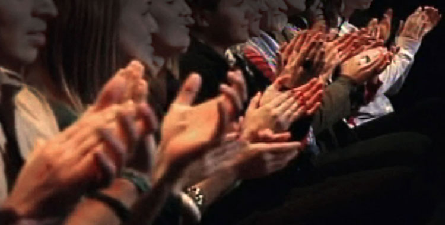

Как верующему художнику отвечать на восторги публики?
Да простит меня автор статьи, я переиначил его заголовок. В оригинале он таков: "Как пастору отвечать на слова ободрения после проповеди?" Тема показалась мне актуальной и важной для верующего художника, одаренного талантами. Вообще-то художник по определению не может быть неверующим. Но я имею в виду тех из нас, которые верят, что дары небес - это не наша собственность, и нашим творчеством мы обязаны Всемогущему. Для такого художника важно воздать всю честь и славу Творцу и случайно не поддаться соблазну положить что-то в свой карман. От того я решился на подлог и замену. Руководители общин - это не моя сфера. А художники - таки да, начиная с самого себя. Думаю, наш брат без труда пересчитает в уме ситуацию с пастором в свою собственную, когда зазвучат овации и восторги публики. Потому текст статьи я не тронул ни на запятую.
Как пастору отвечать на слова ободрения после проповеди?
Автор — Brian Croft / practicalshepherding.com Перевод — Алекс Фишман для ieshua.org
«Отличная работа… хорошая проповедь… это реально касалось меня.» Список фраз, которые может услышать пастор от уходящих после собрания церкви, можно продолжать. Независимо от того, была проповедь хорошей или нет, эти краткие комментарии будут звучать в наш адрес, с разной степенью искренности, и важно, чтобы мы знали, как отвечать на них в почитающей Бога манере. Вот четыре рекомендации:
1. Скажите «Спасибо»
Печально, когда пастор пытается надеть на себя ложное смирение, чтобы скрыть собственную неуверенность или неспособность понять, как вести себя, слыша в свой адрес добрые слова. Как правило, это проявляется в ответе пастора на добрый, ободряющий комментарий, что-то вроде: «Ох… нет, эта проповедь была не так уж и хороша. Я вот там кое-что забыл, а тут сбился…» Просто остановитесь и скажите: «Спасибо вам за ваши добрые слова.»
2. Будьте благодарны за поддержку
Вне зависимости от содержания комментария, если он был предназначен поддержать вас, поблагодарите за слова ободрения и поддержки. Будьте благодарны потому, что краткий, простой или даже поверхностный комментарий потребовал чьего-то времени, чтобы поделиться этими мыслями с вами. Будьте благодарны и просто примите его.
3. Будьте скромны, чтобы Господь и в дальнейшем использовал вас
Что должно смирять нас больше, чем слушатели, выделившие время на то, чтобы подойти и ободрить нас после проповеди, так это тот факт, что Бог будет избирать такой несовершенный сосуд, вроде нас, неделя за неделей, воскресенье за воскресеньем, чтобы кормить народ Божий Божьим Словом. Это должно послужить тому, что мы будем удивляться каждому доброму слову, сказанному в наш адрес. Когда это перестаёт нас касаться таким образом, значит пришло время переживать.
4. Всю славу отдайте Богу
Великий соблазн, когда принимаешь комплименты после проповеди, полагать, что плод трудов — это всё о нас, и из-за нас. Когда с вами делятся добрым словом после проповеди, убедитесь, что Бог не забыт и прославлен. Не поверхностно или формально, но искренне. Мы можем воздавать Богу славу устами, но внутри быть наполнены гордыней.

Предлагаемые ответы:
В свете вышеприведенных рекомендаций, вот несколько вариантов, которые мне кажутся уместными для того, чтобы ответить так на добрые слова после проповеди:
«Спасибо за ваши добрые слова! Бог благ в том, как Он говорит к каждому из нас через Своё Слово.»
«Спасибо вам за вашу поддержку, я благодарен Богу за то, что Он использовал сегодня Своё Слово таким образом.»
«Благодарю вас, что вы выделили свое время, чтобы поделиться тем, как Божье Слово коснулось вас сегодня. Этот отрывок также тронул и меня похожим образом. Бог так милостив…»
Пасторы, принимайте добрые слова, обращенные в ваш адрес. Ободряйтесь ими. Это поможет вам пережить уныние, которое часто приходит к нам по понедельникам. И будьте смиренны, поскольку через шесть дней вам всё это придется повторить.

От редактора: Для меня эта статья была полезной. Здесь есть над чем подумать и чему научиться.